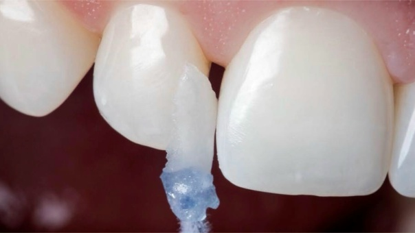
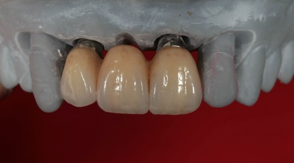
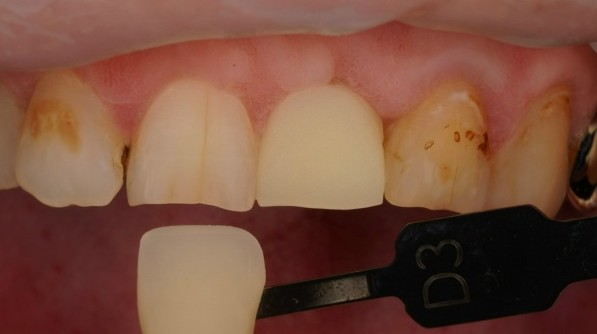
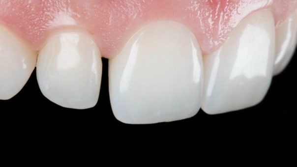

Широкий кругозор
Видеть задачу шире собственной специализации и отдельного этапа работы.


dpb объединяет обучение, практику, специалистов, технологии и материалы в одну систему — чтобы видеть стоматологическую задачу целиком, а не по отдельным этапам.В dpb встречаются специалисты, знания и технологии — для решения стоматологических задач.
Связаться с нами →Принципы, заложенные при создании Дентального Проектного Бюро, формировались более двух десятилетий — в собственной практике, профессиональном обучении, на международных симпозиумах и конгрессах, в общении и работе с коллегами разных направлений стоматологии.Подход dpb складывался более 20 лет — в практике, обучении и работе с коллегами разных направлений стоматологии.
Невозможно ограничиваться знаниями и навыками только в одной области.
Сильное профессиональное решение требует междисциплинарного взгляда: видеть связи между этапами работы, понимать задачи смежных специалистов и учитывать, как каждое принятое решение влияет на общий результат.Важно понимать задачи смежных специалистов и влияние своих решений на общий результат.
Видеть задачу шире собственной специализации и отдельного этапа работы.
Понимать, как решения врача, техника и смежных специалистов влияют друг на друга.
Принимать собственные решения и понимать их влияние на общий результат.
Подключать специалиста нужного профиля там, где этого требует задача.
Выбирать технологии и материалы в соответствии с конкретной задачей.
Дентальное Проектное Бюро — это центр системной подготовки специалистов в области стоматологии: преддипломного и постдипломного образования, а также повышения квалификации действующих специалистов.Обучение для студентов, начинающих и действующих специалистов в стоматологии.
Это социальное пространство, информационный и технологический хаб, где знания, практика, специалисты, материалы и технологии работают как части одной системы.Лабораторная практика, материалы и технологии дополняют обучение.

Курсы, лекции, семинары и практические программы для студентов, начинающих и действующих специалистов.
Выбрать обучение →
Практическая работа и взаимодействие специалистов над индивидуальными клиническими задачами.
Открыть лабораторию →
Профессиональные материалы, оборудование и технологические решения для стоматологии и зуботехнической практики.
Смотреть материалы и технологии →Зубной техник · основатель Дентального Проектного Бюро
Более двух десятилетий Сергей работает в профессии, соединяя практический опыт с постоянным обучением в разных направлениях стоматологии.
Его профессиональный подход строится на междисциплинарности: важно понимать не только собственный этап работы, но и то, как решения врача, техника, выбранные технологии и материалы влияют на общий результат.В основе его подхода — совместная работа врача и техника, осознанный выбор технологий и материалов.
Именно этот принцип стал одной из основ dpb.

Профессиональный взгляд Сергея Юдакова складывался из практики, обучения у специалистов разных направлений и постоянного участия в международной профессиональной среде.
Разные направления и профессиональные школы сформировали главное — привычку смотреть на задачу шире одной специализации.


Австрия · Италия · Германия · Греция · Испания · Польша · США · Япония · ОАЭ
dpb выросло из практики, обучения и постоянного обмена опытом. Рядом с проектом — специалисты из стоматологии и смежных областей, с которыми нас связывают профессиональный интерес, совместное обучение и открытый диалог.Рядом с dpb — коллеги из стоматологии и смежных областей. Нас объединяют практика, обучение и обмен опытом.
Друзья dpb — люди, чьи знания, опыт и взгляд становятся частью среды, в которой развивается проект.

Президент Национальной ассоциации JFO в России. Специалист по функциональной ортопедии челюстей.

Сооснователь и главный методолог «УНИВЁРS», партнёр Evolut Business.

Магистр психологии, психолог учебного центра для врачей-стоматологов, спикер DentalStart 2.0.

Выпускник Osaka Ceramic Training Center. Демонстратор экспертного уровня Noritake.

Создатель Easy Light и Easy Hold. Провёл обучение более чем для 1000 врачей.

Международный тренер Exocad, автор анатомической библиотеки Max Ashortia.

Основатель Dental ES, автор лекций и образовательных программ для зубных техников.
Любой проект может быть успешен только тогда, когда его компоненты работают не по отдельности, а как части одной задачи.
Сначала необходимо определить, какую задачу предстоит решить и какого результата нужно достичь.
В проекте участвуют специалисты той квалификации и специализации, которая необходима на конкретном этапе.
Технологии и материалы выбираются под задачу, а не задача подстраивается под имеющиеся решения.
За каждым направлением dpb стоят конкретные специалисты, их опыт и профессиональная ответственность.
Профессиональная методология, образовательный подход и развитие принципов dpb.
Финансовый директор
Технический директор
dpb — это не только обучение и профессиональные принципы. Это ежедневная работа: обсуждение задач, взаимодействие специалистов, лабораторные этапы и решения, которые приводят к конкретному результату.Каждый день мы обсуждаем задачи, работаем с коллегами и проверяем решения на практике.
Здесь знания проверяются практикой, а каждый новый проект становится частью общего профессионального опыта.


 01 / 12
01 / 12Работа не сводится к готовой конструкции или финальному изображению.
Ей предшествуют анализ задачи, обсуждение решений, участие необходимых специалистов, выбор технологий и материалов и последовательная работа на каждом этапе.За каждой работой — анализ, согласованные решения, выбор материалов и работа специалистов.
Финальный результат - итог согласованных профессиональных решений.








 02 / 44
02 / 44Барнаульский филиал, созданный при личном участии Сергея Юдакова.
Это сохраняет прямую связь с профессиональным подходом и принципами, на которых основано Дентальное Проектное Бюро.
 Барнаул · Сиреневая, 31
Барнаул · Сиреневая, 31